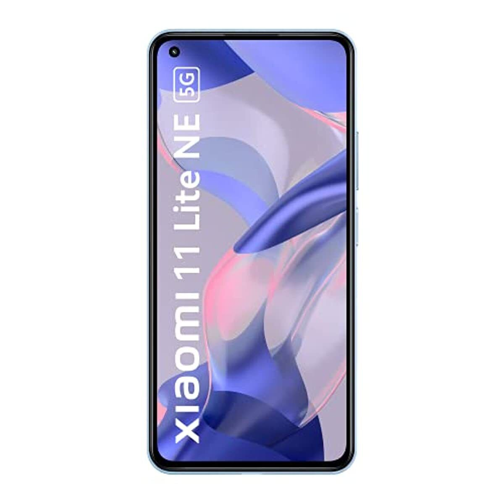

El Xiaomi Mi 11 Lite es la variante económica de la serie Mi 11 de
Xiaomi. El Mi 11 Lite cuenta con una pantalla AMOLED de 6.55 pulgadas a
resolución Full HD+ y tasa de refresco de 90Hz. Por dentro, encontramos
un procesador Snapdragon 732G de Qualcomm, con 6GB de memoria RAM y
opciones de 64GB o 128GB de almacenamiento interno no expandible. La
cámara principal del Mi 11 Lite es triple, con lentes de 64MP, 8MP, 5MP
y la cámara frontal es de 16 megapixels. La energía es provista por una
batería de 4250 mAh de carga rápida, y completa sus características con
parlantes duales, lector de huellas montado de costado, y corre MIUI 12
basado en Android 11.